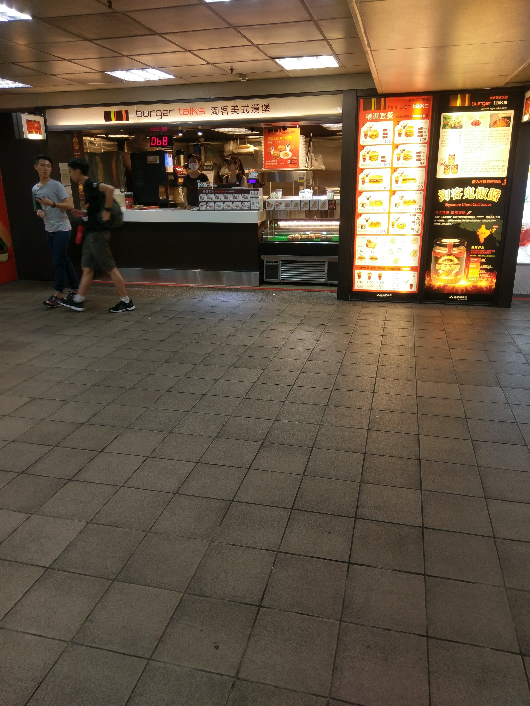
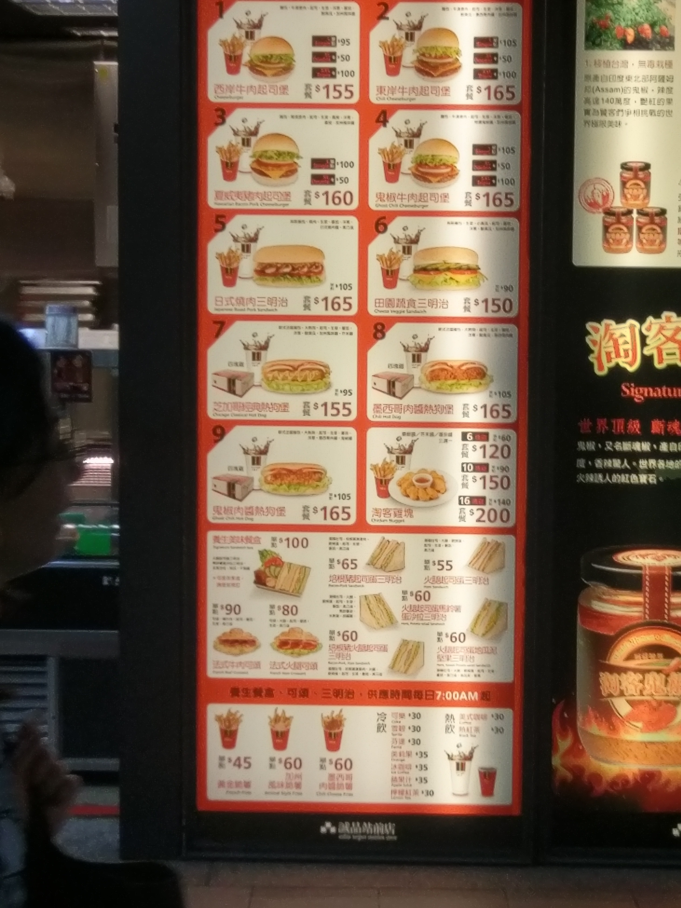
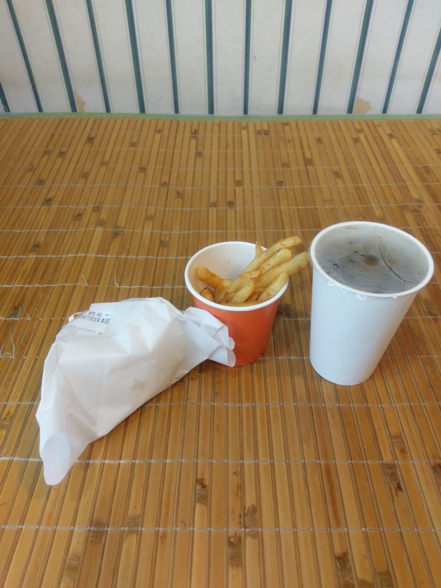

平常沒有寫日記或實際的習慣，不過今天還是來寫一篇以交差。
今天呢，下課後就去捧場一下朋友在西門町的演講，而後準備回家。
因為住家附近沒有賣吃的，所以打算買東西回家吃，在走過台北捷運站時就看到了這個！
因為我家附近只有麥當勞，連肯德基都沒有，對於這種比較少見的速食店當然多少會有點興趣，所以就去點啦！
以下是菜單：
什麼？你說圖太小字太糊？哎呀，沒關係啦，我相信大家眼力都很好，絕不是因為我忘了拍近照。
總而言之，我點了2號餐，東岸牛肉起司堡，要價165元新台幣，實在不便宜，但我還加5元將飲料換成了咖啡。
為什麼？屁話！點可樂或雪碧能喝出和麥當勞的差異嗎？咖啡可是各家不同的，雖然是敷衍了事的食記，也不能太草率呀！
附近沒有位子，無奈之下只好帶回家享用，總之，打開袋子看它的全貌。
嗯？感覺份量好像有點少？
最後，附上官網連結